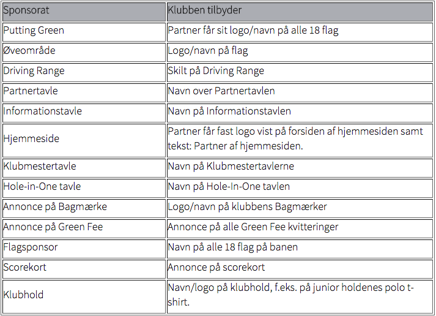

<div class="pages">
  <div data-page="ovrige-sponsorater" class="page navbar-fixed toolbar-fixed" >
    <div class="navbar">
      <div class="navbar-inner">
        <div class="left">
          <a href="#" class="link back icon-only"><i class="icon icon-back"></i></a>
          <!-- <a href="#" class="back link icon-only"><i class="icon icon-back"></i></a> -->
        </div>
        <div class="center">Øvrige sponsorater</div>
        <!-- <div class="right"></div> -->
        <div class="right">
        </div>
      </div>
    </div>
    <div class="page-content" style="padding-top:45px;">
       <div class="content-block">
          <p>Ud over de traditionelle sponsorater (Hul-sponsorater, bænke-sponsorater, turnerings-sponsorater), er der i Hornbæk Golfklub rige muligheder for at give sponsorstøtte. Nedenfor har vi listet en række idéer:</p>
          
          <p>Sponsorturnering<br /> 
          Partner inviteres til den årlige sponsorturnering (antal personer er afhængigt af tilknyttet sponsorat) med morgenmad inden turneringen, 18-hullers turnering med gunstart og efterfølgende frokost og præmieoverrækkelse.
          <br /><br /> 
          Omtale<br /> 
          Partner bliver nævnt jævnligt på vores internetsider.
          <br /><br /> 
          Gratis green fee til kunder etc.<br /> 
          Partner modtager årligt 1 Green Fee Voucher pr. 1.000 kr sponsorat, som kan anvendes til gratis spil på banen alle dage af personer, som i øvrigt opfylder klubbens betingelser for spil på banen.
          <br /><br />
          Erhvervsklub<br /> 
          Partner har 1 plads i Hornbæk Erhvervsklub, der afholder 6 matcher og ca. 3 arrangementer i løbet af sæsonen. Du kan læse mere her: Erhvervsklubben</p>
        </div>
    </div>
    </div>
    </div>
  </div>
</div>
